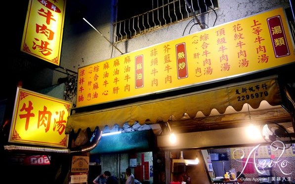
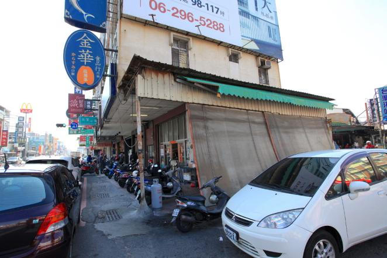
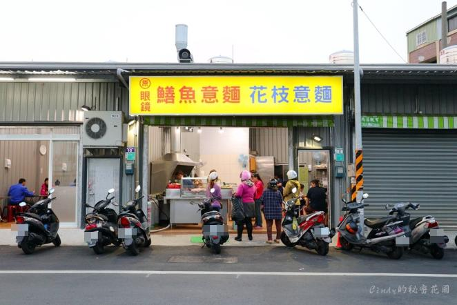
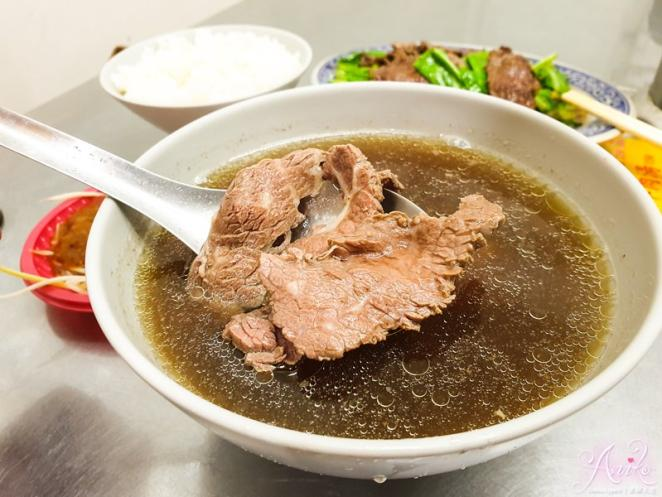
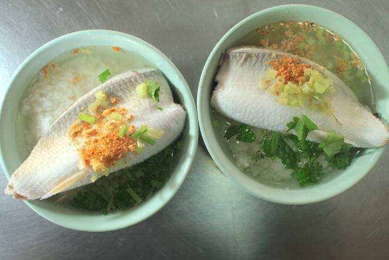
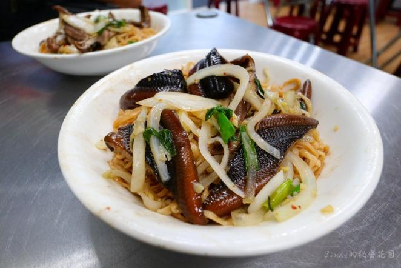

美食介紹
請點選以下圖片

地址: 台南市中西民族路三段91號
電話: 0983-133-306
營業時間: 下午17:00至上午10:00，星期二凌晨固定公休
介紹: 每日固定新鮮牛肉，無冷凍牛肉，湯體採用牛大骨，洋蔥熬製"width="618" height="400">
地址: 台南市中西民族路三段91號
電話: 0983-133-306
營業時間: 下午17:00至上午10:00，星期二凌晨固定公休
介紹: 每日固定新鮮牛肉，無冷凍牛肉，湯體採用牛大骨，洋蔥熬製"width="618" height="400">

地址: 台南市南區金華路一段523號
電話: 06-2236818
營業時間: 上午5:00至下午13:30，周三公休" width="618" height="400">
地址: 台南市南區金華路一段523號
電話: 06-2236818
營業時間: 上午5:00至下午13:30，周三公休" width="618" height="400">

地址:台南市南區新和東路8號
電話: 06-2653292
營業時間: 下午17:00至晚上24:00，星期六、日公休" width="618" height="400">
地址:台南市南區新和東路8號
電話: 06-2653292
營業時間: 下午17:00至晚上24:00，星期六、日公休" width="618" height="400">
菜名: 花紋牛肉湯
評價 : 店內最多人點的花紋牛肉湯，油脂和瘦肉分布均勻，泡太熟會偏硬，湯頭鮮味十足。" width="618" height="400">
評價 : 店內最多人點的花紋牛肉湯，油脂和瘦肉分布均勻，泡太熟會偏硬，湯頭鮮味十足。" width="618" height="400">
菜名: 虱目魚肚
評價: 魚肚鮮甜肚油適中，湯頭鮮甜，魚肉口感綿密，雖然較小片卻厚實。" width="618" height="400">
評價: 魚肚鮮甜肚油適中，湯頭鮮甜，魚肉口感綿密，雖然較小片卻厚實。" width="618" height="400">
菜名: 乾炒鱔魚意麵
評價: 乾炒鱔魚意麵味道整體偏甜，麵和鱔魚偏軟，份量足且價格佛心，cp值很高。" width="618" height="400">
評價: 乾炒鱔魚意麵味道整體偏甜，麵和鱔魚偏軟，份量足且價格佛心，cp值很高。" width="618" height="400">
×

Some text in the Modal..